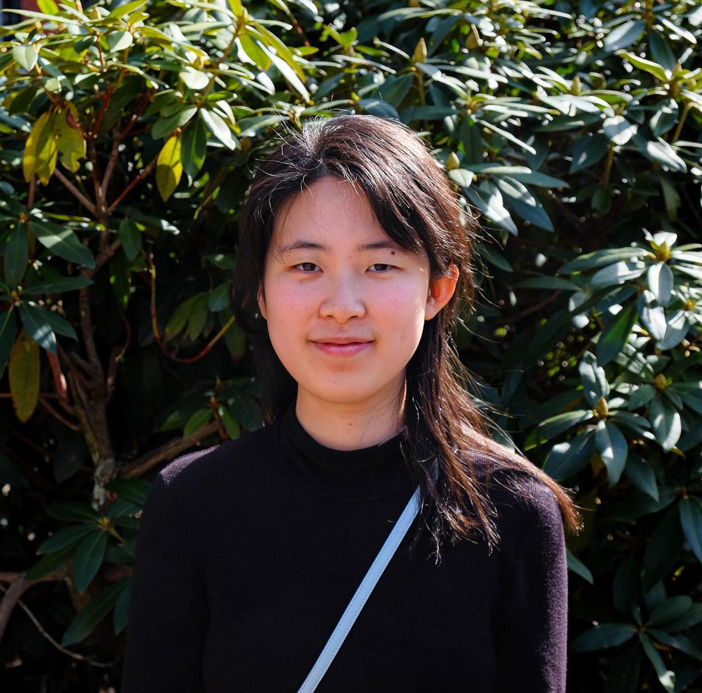

RACHEL MA
About Me
|  |
I am a third year doctoral student in EECS (Electrical Engineering and Computer Science) at MIT. I am part of the
Algorithmic Alignment Lab , advised by Professor Dylan Hadfield-Menell.
I am broadly interested in AI (NLP, Vision, Foundation Models, Robotics) to help with interactions and alignment in open-ended scenarios between humans and autonomous agents/systems for better decision making and reasoning for assisting humans with everyday tasks.
I am interested in both enabling personalization to human preferences, while maintaining generalized agents. I have been supported by the MIT Presidential Fellowship.
|
Recent News
Education
Massachusetts Institute of Technology (2023-present)
3rd year EECS PhD Student
SM Electrical Engineering and Computer Science, February 2025
Brown University (2019-2023)
Sc.B. Computer Science with Honors ("Skill Generalization With Verbs"), advised by: Stefanie Tellex and George Konidaris.
A.B. Music with Honors ("Odyssey"), advised by Anthony Cheung.
University of Toronto Schools (2013-2019)
Middle and High School Diplomas
Other Certifications
Licentiate Diploma in Piano Performance (2019)
Associate Diploma in Piano Performance (2016)
Associate Diploma (ARCT) and Licentiate Diploma (LRCM) are the highest academic standings awarded by the Royal Conservatory of Music Certificate Program